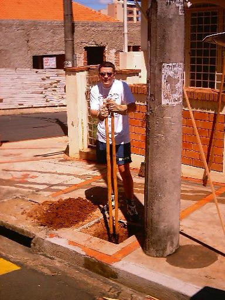
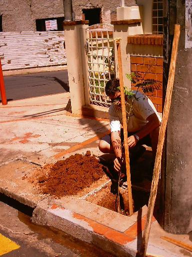
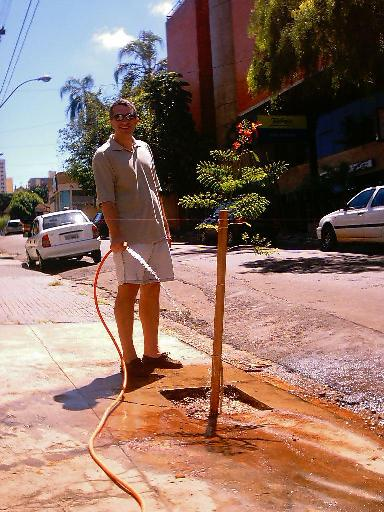
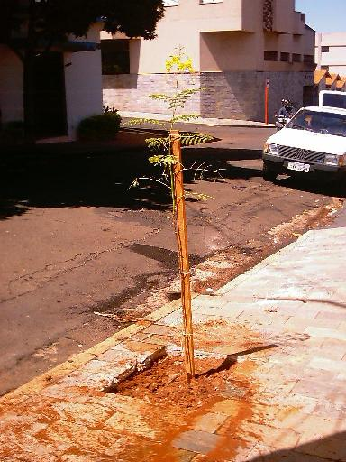
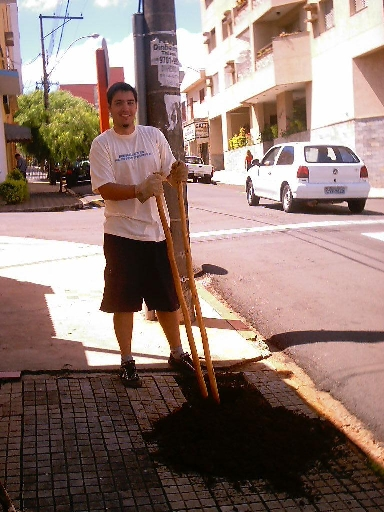
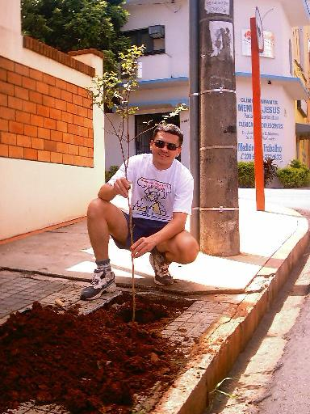
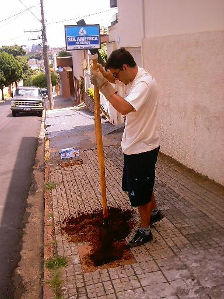
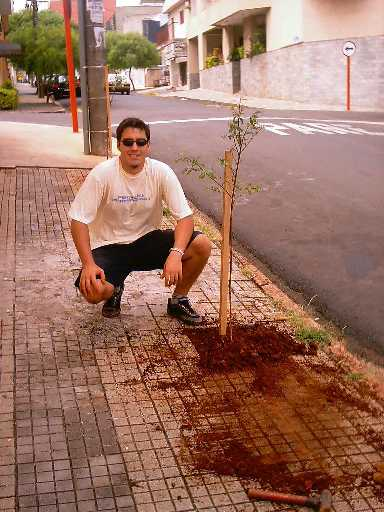
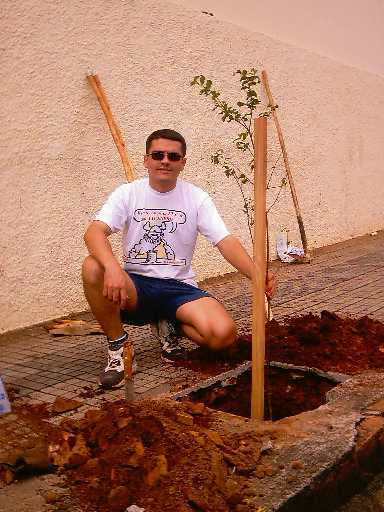
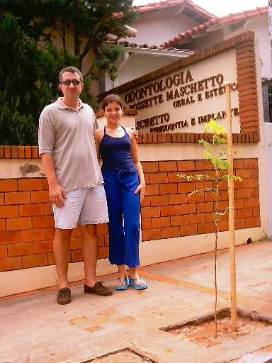

Neste dia,
plantamos mais 7 mudas, sendo:
4 Mini-flamboyants e 3 Resedás
O plantio foi
feito na calçada do consultório do nosso décimo colaborador,
o casal Adriano e Mônica;
dentistas que residem no centro de São Carlos.
Veja as fotos:
 |
Alexandre,
já adiantado, abre o quarto aceiro,
onde foi plantada uma muda de Mini-flamboyant
|
 |
Logo em
seguida, Danilo planta e estaqueia a muda |
 |
Nosso
colaborador, Adriano, molha a primeira muda
de Mini-flamboyant |
 |
A segunda
muda de Mini Flamboyant plantada |
 |
Danilo
abre o quinto aceiro, onde foi plantado um Resedá |
 |
Alexandre
planta o Resedá |
 |
Danilo
cava o penúltimo aceiro |
 |
Logo
após, planta a muda de Resedá |
 |
Alexandre
finaliza o plantio com mais um Resedá |
 |
Nosso
colaborador, Adriano, posa ao lado da filha,
em frente ao seu consultório
|
Este foi um
plantio muito importante para nós, pois inserimos o projeto
na área central da cidade, onde
não há o costume de plantar árvores.
Esperamos que o exemplo dos
colaboradores, Adriano e Mônica, sirva
para muitos outros moradores !
|